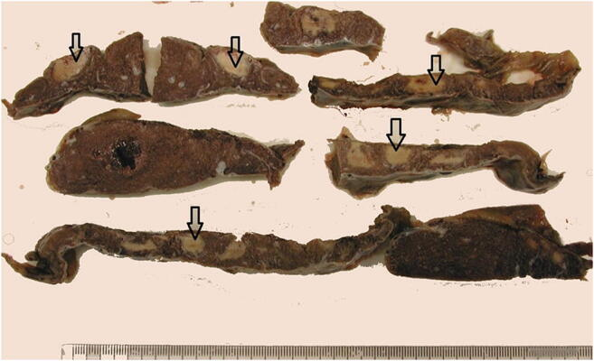

Página 7 · Sofrimento fetal crônico
A raiz compartilhada com a pré-eclâmpsia
Por que tanta paciente com pré-eclâmpsia também restringe o crescimento do bebê? Não é coincidência.
A fórmula que conecta tudo
A fórmula que conecta tudo. Há uma relação simples que amarra restrição de crescimento e pré-eclâmpsia num mesmo nó: a pressão arterial é o produto da resistência vascular periférica pelo débito cardíaco — PA = RVP × débito cardíaco. Guarde essa igualdade; ela explica os dois desfechos de uma vez.
Invasão trofoblástica ruim → resistência alta → pressão sobe
Invasão trofoblástica ruim → resistência alta → pressão sobe. No início da gravidez, as invasões trofoblásticas deveriam remodelar as artérias espiraladas e derrubar a resistência vascular. Quando essas invasões não acontecem, a resistência vascular periférica permanece alta; e, pela fórmula, com resistência alta a pressão sobe — é o terreno da pré-eclâmpsia.
Interativo: alterne entre invasão boa e ruim.
Invasão boa remodela a artéria espiralada (baixa resistência). Invasão ruim mantém a resistência alta — e, pela mesma raiz, sobe a PA materna (pré-eclâmpsia) e reduz o fluxo fetal (restrição). É a semente da leitura da uterina.A mesma resistência faz o feto crescer pouco
A mesma resistência faz o feto crescer pouco. O mesmo defeito tem um segundo efeito. A resistência alta faz chegar menos sangue ao feto, que cresce pouco. Ou seja: uma raiz (resistência alta), dois desfechos (hipertensão materna e feto pequeno). Não são duas doenças que por acaso se encontram — é o mesmo problema vascular se expressando em dois lugares.

Fatias de placenta com áreas pálidas e mais firmes (setas) = infartos de idades diferentes: o substrato anatômico da insuficiência por má perfusão materna — invasão trofoblástica inadequada mantém arteríolas espiraladas de alta resistência.
Mittal N, Byard RW, Dahlstrom JE. Forensic Sci Med Pathol (via PMC) · fonte / licença: CC BY 4.0
Uma raiz, dois desfechos, e o corte 32–34
Uma raiz, dois desfechos, e o corte 32–34. Por isso não é coincidência encontrar pré-eclâmpsia — sobretudo a de manifestação precoce — evoluindo com restrição de crescimento: a fisiopatologia é compartilhada, o que aumenta a gravidade do quadro. E o corte prognóstico acompanha: pré-eclâmpsia com manifestação antes de 32–34 semanas tem pior prognóstico; depois, melhor.
Quiz — fixação
Qual mecanismo explica a associação entre pré-eclâmpsia e restrição de crescimento?
- Gabarito A. A resistência alta (invasão ruim) sobe a PA e diminui o aporte fetal simultaneamente.
- B a coocorrência tem base fisiopatológica comum — chamar de acaso é o erro que a página desmonta.
- C o elo não é plaquetário; é vascular (resistência).
- D inverte a causalidade e o mecanismo — não é o débito aumentado que gera pré-eclâmpsia.
Pré-eclâmpsia com manifestação antes de 32–34 semanas, evoluindo com restrição. O que isso indica?
- Gabarito B. Manifestação precoce = pior prognóstico, e a raiz comum aumenta a gravidade.
- A precoce é justamente o pior cenário.
- C restrição por insuficiência placentária é assimétrica, não simétrica.
- D é o mesmo patamar numérico, mas papel diferente (prognóstico de PE, não classificação do RCIU).